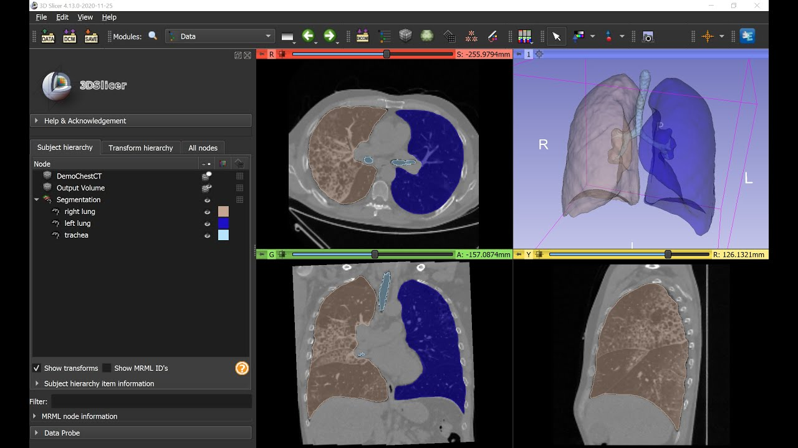

Segmenting lung region in 3D CT volumes using 2D UNet architecture. To generate the segmentation label mask, we used 3D slicer software along with NVidia AI Assisted Annotation tool (can be installed as an extension in a 3D slicer) to speed up the process. Manual segmentation on each slice for 170 volumes can take forever. Thanks to NVidia researchers for developing this tool which helped me to generate these masks in 2 days instead of months. 3D data is converted to 2D slices to use 2D network instead of 3D. Further details can be found in the git repository.
